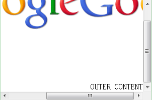

RC3003: IE6 IE7 IE8(Q) 下 'background-attachment:scroll' 时背景图片会随着元素内容滚动
标准参考
如果设置了背景图形（'background-image' 特性），'background-attachment' 特性指定了图形是否相对视口固定（fixed）或随着包含块滚动（'scroll'）。
而每一个视图中仅有一个视口，如果有一个元素具备滚动机制（'overflow' 特性设置），则设定在该元素上的固定的背景（background-attachment : fixed）不随该元素移动，设定在该元素上的滚动的背景（background-attachment : scroll）不随该元素的滚动条滚动。
即使背景图形是固定的，它也只是在元素的 content、padding 和 border 区域（即 border box 之内）可见。因此，除非图形平铺（background-repeat: repeat），否则它可能是不可见的。
关于 'background-attachment' 特性的详细信息，请参考 CSS 2.1 'background-attachment' 中的内容。
问题描述
在 IE6 IE7 IE8(Q) 下，当一个拥有滚动机制的元素设置了 'background-image' 特性并且 'background-attachment' 特性值为 'scroll' 时，元素的背景图片会随着元素内容滚动。
造成的影响
若为一个拥有滚动机制的元素设置了 'background-image' 特性并且 'background-attachment' 特性值为 'scroll'， 在 IE6 IE7 IE8(Q) 下滚动该元素时其背景图片也会随着滚动，而在其它浏览器中背景图片不会移动，这会造成了视觉上的差异。
受影响的浏览器
| IE6 IE7 IE8(Q) |
|---|
问题分析
规范中明确规定了设置 'background-attachment : scroll' 的元素不随滚动条移动，而 IE6 IE7 IE8(Q) 却反其道为之。
分析以下代码：
<div style="background:url(google.png) repeat-x scroll 0 0 #FFFFFF;width:300px;height:200px;overflow:auto;"> <div style="background:yellow;height:200px;width:40px;">inner content inner content inner content inner content inner content</div> <div style="width:400px;text-align:right;">OUTER CONTENT</div> </div>
上述代码创建了一个拥有水平和垂直滚动机制的，并且设置了背景图片，'background-attachment' 特性值为 'scroll' 的元素， 分别将垂直滚动条滚动到最底部，将水平滚动条滚动到最右端，各浏览器中表现如下：
| IE6 IE7 IE8(Q) | Firefox Chrome Safari Opera |
|---|---|
|  |  |
从以上测试结果中可以看出，IE6 IE7 IE8(Q) 中在水平及垂直方向上背景图片均会随着元素内容滚动。
CSS Backgrounds and Borders Module Level 3 草案中为 'background-attachment' 添加了新的值 'local'。当设置了 'background-attachment : local' 后， 背景图片将相对于内容固定，如果元素拥有滚动机制（水平或垂直方向），背景图片会随着元素内容滚动。
分析以下代码：
<div style="background-image:url(google.png);background-attachment:local;background-repeat: repeat-x;width:300px;height:200px;overflow:auto;"> <div style="background:yellow;height:200px;width:40px;">inner content inner content inner content inner content inner content</div> <div style="width:400px;text-align:right;">OUTER CONTENT</div> </div>
分别将垂直滚动条滚动到最底部，将水平滚动条滚动到最右端，在 Chrome Safari Opera 中表现如下：1
注1：目前只有 Chrome Safari Opera 支持 'background-attachment : local'。
关于 'background-attachment : local' 的更详细信息，请参考 CSS Backgrounds and Borders Module Level 3 草案：3.5. The 'background-attachment' property。
解决方案
1.若需要在所有浏览器下元素图片不随元素内容滚动，则不给元素设置任何背景，并且在元素的父元素上设置背景图；
2.若需要在所有浏览器下元素图片随元素内容滚动，则不设置元素背景，而设置元素内容的背景图片并设置 'background-attachment : scroll'；
3.对于 Chrome Safari Opera，如果需要使背景图片随元素内容滚动，使用 'background-attachment : local'。
- 若需要在所有浏览器下元素图片不随元素内容滚动：
<div style="background:url(google.png) repeat-x scroll 0 0 #FFFFFF;width:300px;">
<div style="width:300px;height:200px;overflow:auto;">
<div style="background:yellow;height:200px;width:40px;">inner content inner content inner content inner content inner content</div>
<div style="width:400px;text-align:right;">OUTER CONTENT</div>
</div>
</div>
<div style="width:300px;height:200px;overflow:auto;">
<div style="background:url(google.png) repeat-x scroll 0 0 #FFFFFF;">
<div style="background:yellow;height:200px;width:40px;">inner content inner content inner content inner content inner content</div>
<div style="width:400px;text-align:right;">OUTER CONTENT</div>
</div>
</div>
参见
知识库
相关问题
测试环境
| 操作系统版本: | Windows 7 Ultimate build 7600 |
|---|---|
| 浏览器版本: | IE6 IE7 IE8 Firefox 3.6.8 Chrome 7.0.503.0 dev Safari 5.0.1(7533.17.8) Opera 10.61 |
| 测试页面: |
background-attachment-scroll.html background-attachment-local.html solution_scroll.html solution_local.html |
| 本文更新时间: | 2010-09-06 |
关键字
background background-attachment scroll 滚动 背景 图片